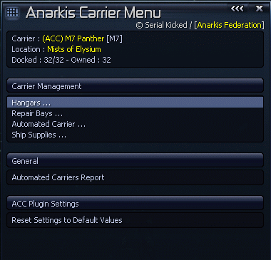
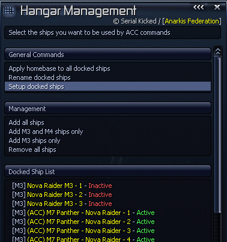
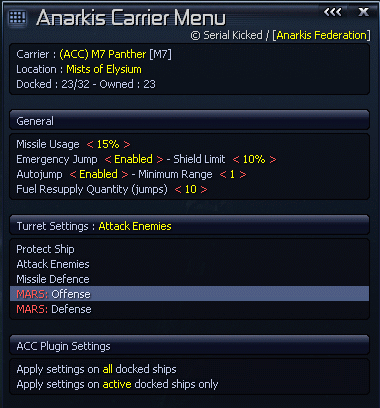
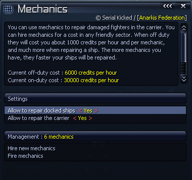
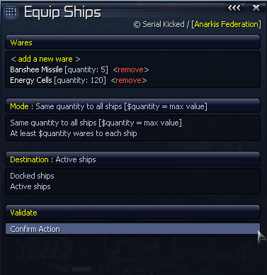
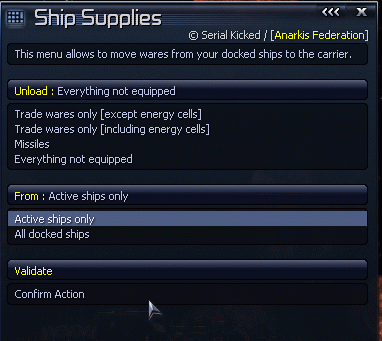
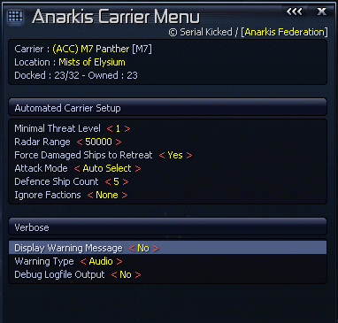

| Détails Techniques |
1.1 Installation
1.4 Notes de compatibilité Ce plugin est compatible avec n'importe qu'elle configuration tant qu'aucun autre script n'empiète sur mes slots de commande. Les scripts remplissant plus ou moins le même role que ADS, comme par exemple CODEA, peuvent poser quelques problèmes. Vous pouvez utiliser les deux, mais ne lancez aucune commande de CODEA sur un navire géré par ADS, et réciproquement. |
| Anarkis Defense System |
2.1 Description Générale Il est bien connu que le monde de X3 manque dramatiquement de commandes liées aux navires porteurs (TL, M1,...) et ADS essaie de combler ce manque. Ce script rajoute divers commandes pour les vaisseaux de classe M7, M1, TM et TL afin de gérer plus efficacement les chasseurs que transportent ces navires. Grâce à ADS vous pouvez facilement renommer, équiper, changer la base et parametrer les chasseurs en quelques clics. ADS vous permet aussi d'envoyer des flotilles offensives et défensives contre des cibles spécifiques, de nétoyer un secteur, ou de commercer. De plus vous pouvez aussi complétement automatiser la gestion des chasseurs de vos navires porteurs en patrouille, dès que ce dernier détecte un danger potentiel, les chasseurs seront envoyés pour s'occuper du problème. Pour que ceci fonctionne vous devrez equipper votre navire porteur avec le logiciel de gestion de navire porteur (Carrier Command Software) que vous pouvez trouvez dans la plupart des docks d'equipement. Ce script est complémentaire au script M.A.R.S. (Motion Analysis Relay System) de gestion de tourelles et de drones. Utilisez simultanément les commandes ADS:Mode-Auto et MARS:auto-collect-loot dans un secteur Xenon pour comprendre ce que je veux dire ;) De plus, les stations de commerces, les equipement docks et les bases militaires détenues par le joueur peuvent aussi utiliser le mode automatique de ADS afin de protéger le secteur contre des attaques hostiles. 2.2 Commandes pour les navires porteurs ADS ajoutes les commandes suivantes dans le menu [general] de votre vaisseau porteur (TL,TM,M1,M7) à partir du moment où celui ci a le logiciel de gestion correspondant:
2.3 Configuration du navire porteur Le menu ADS: Configuration permet de configurer à la fois vos chasseurs et le comportement du navire porteur. Il permet aussi de transférer facilement du matériel dans un sens ou dans l'autre.  Le menu des [Hangars] permet de configurer vos chasseurs. La [Zone de Réparation] permet de réparer les dommages subis par vos chasseurs et votre porteur. [Mode Automatique] permet de définir le comportement du porteur et comment il va gérer ses chasseurs. [Equipement] permet de transferer des marchandises et/ou armements dans un sens ou dans l'autre. Et enfin, [Rapport] permet de localiser et configurer tous vos porteurs simultanément.
 
Ceci est l'endroit qui permet de configurer tous vos chasseurs de façon simultanée. Vous pouvez définir quels navires seront utilisés par ADS ou nom (ceux endommagés sont automatiquement ignorés), vous pouvez aussi les renommer selon plusieurs modèles différents. Le menu [Configurer Chasseurs] permet de définir pour ceux-ci leurs reglages de base, la configuration des tourelles, l'utilisation du moteur de saut, et j'en passe.

Vous pouvez embaucher des mécanos afin de garder votre porteur et ses chasseurs en pleine forme. Cependant, celà coute de l'argent, même quand il n'y a rien à réparer. Pour pouvoir embaucher un mécano vous devez vous trouver dans un secteur allié disposant d'une station commerciale. Vous devrez aussi payer 50.000 crédits en tant que prime d'embauche. Ceci payé, chaque mécano vous coutera 1.000 crédits / heure quand il n'a rien à faire, et 15.000 crédits / heure quand il a du travail. Si pour une raison ou une autre, vous n'avez plus d'argent pour les payer ils quitteront le navire sans avertissement. Surveillez vos finances si vous comptez embaucher des mécanos. Les mécanos sont bien moins couteux qu'une réparation dans un chantier, mais ils sont aussi beaucoup plus lents: 15 points d'intégrité de la coque par minute et par mécano. Celà prendrait à un seul mécano à peu près 10 heures pour réparer un Nova endommagé à 90%. Par contre celà ne vous coutera que 150.000 crédits (au lieu d'environ 10x plus si vous réparez dans un chantier). Vous ne pouvez pas cummuler plus de 20 mécanos par porteur. Notez que si vous autorisez la réparation pour le porteur ET pour les chasseurs, les mécanos commençeront toujours par le porteur. Réparer un M1, M7 ou TL, même peu endommagé peut prendre un temps très important. Ceci fait que vous pouvez envisager de désactiver la réparation du porteur le temps de vous occuper des chasseurs.
 
C'est ici que vous pouvez transférer des marchandises ou armes entre votre porteur et vos chasseurs. Comme tout le reste de ce script tout ce déroule via des menu et le processus est assez simple pour se passer d'explications :)

- Niveau Minimal de Menace : C'est ici que vous pouvez définir comment le porteur va se comporter en mode automatique. Ce reglage permet de définir à partir de quel niveau de menace le porteur va deployer ses chasseurs. Pour comprendre comment regler cette valeur, il faut connaitre le niveau de menace attribué à chaque type de vaisseau et savoir que le porteur va deployer ses chasseurs dès qu'il rencontre un M1 ou un M2 quelque soit votre réglage. Voici la liste des valeurs: M5: 1 - M4: 2 - M3: 5 - M8: 10 - M6: 14 - M7: 35 - TL: 15 - TM: 8 - TP/TS: 2 - Portée Radar : Vous pouvez choisir la portée de détection (en metres) de votre porteur. Regler cette valeur de façon trop élevée peut être une mauvaise idée étant donné que les chasseurs auront une longue route à parcourir et que le porteur les rejoindra probablement trop tard étant plus lent qu'eux. Gardez cette valeur entre 15.000 et 50.000 metres. - Forcer les chasseurs endommagés à fuire : Vous pouvez forcer les chasseurs ayant moins de 10% de bouclier à fuir (ou quand le coque est touchée). Si le chasseur évite alors de se faire endommager encore plus et que son niveau bouclier remonte assez, il repartira à l'assaut de sa cible. Si vous désactivez cette option, les chasseurs se battront jusqu'à la mort. Ce reglage fonctionne aussi pour les commandes comme "ADS: Attaquer" ou "Nettoyer Secteur". - Type d'attaque : Vous pouvez choisir la façon dont le porteur va choisir ses cibles prioritaires. Il est fortement conseillé de laisser le reglage par défaut car il est de loin le plus efficace. - Nombre de chasseurs défensifs : Permet de choisir le nombre de vaisseaux qui seront purement utilisés pour défendre le porteur quelque soit la situation. Celà permet d'assurer que le porteur ne se trouvera pas isolé en plein combat contre des hostiles multiples. - Ignorer Faction : Vous pouvez aussi définir une liste de faction à ignorer même si elles sont hostiles. Le porteur se défendra si attaqué, mais il n'ira pas attaquer les vaisseaux de cette faction tant que ceux ci restent bien sages. Ce reglage est particulièrement utile quand vous voulez garder une relation amicale avec des factions comme les pirates ou les yakis. - Message d'avertissement : Permet à votre porteur de vous envoyer un message de notification quand il juge que sa situation actuelle est dangereuse et peut occasionner des pertes lourdes. Ces messages seront actuellement envoyés *avant* que le mal ne soit fait (contrairement à X3 qui vous prévient quand c'est trop tard). Il y a 3 méthodes d'avertissement : la fenetre "popup", le message audio et le text en bas d'ecran (avec un bip). 2.4 Mode Automatique Cette commande, bien qu'elle puisse être utilisée en d'autres circonstances, a été construite pour être utilisée sur des navires porteurs en patrouille. Une fois activée, votre porteur sera capable de deployer automatiquement ses chasseurs et de les utiliser efficacement contre toute menace potentielle à portée de radar. Une fois la menace supprimée, les chasseurs retourneront automatiquement au porteur. Cette commande est TRES efficace, un M1 avant le plein de chasseurs pour facilement nettoye un secteur Xenon avec des pertes acceptables. Mais cette commande ne triche pas, elle optimise juste le comportement des chasseurs en coordinant leurs attaques. Vous ne pouvez pas utiliser cette commande sur votre vaisseau personnel et vous avez besoin d'au moins 3 chasseurs non endommagés pour qu'elle fonctionne. 2.5 Défense de Secteur Deux nouvelles commandes sont disponibles sur vos stations. Notez qu'ici station signifie : Station Commerciale, Base militaire ou dock d'equipement. Les usines ne peuvent pas stocker assez de chasseurs pour que ces commandes soient utiles.
|
| Autres Détails |
3.1 Questions - Réponses
3.2 Notes de compatibilité pour les scripteurs et moddeurs
|